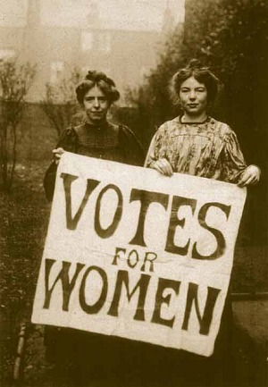

The Suffrage Movement
Ireland Option 2
Key Terms
feminism: a broad term which refers to the cause of women's political and
social rights. Equality>
suffrage: (franchise) the right to vote
Victorian Age: 19th Century, named after Queen Victoria
temperance movement: campaigns for limits on availability of alcohol
land war: 1879-1882 when Irish economy collapsed, increased evictions led to agrarian
violence => Land League
Land League: called for land reform. When it was banned in 1881,
the Ladies Land League took over
Key Personalities
Isabella Tod: North of Ireland's Woman Suffrage Committee (1972)
Anna and Fanny Parnell: Ladies' Land League
Anna Haslam: Dublin Women's Suffrage Association - Thomas Haslam=husband
Hanna Sheehy-Skeffington: Irish Women's Franchise League
Life For Women in 1870
Status of Women: general public's attitude = women
inferior to men
domestic role, no independence
property rights: married, property = husbands
money: married, any money (savings, etc.) = husbands
children: if marraige broke down, custody = husbands (regardless of cause of breakdown)
employment: women were paid less than men.
not allowed to become doctors, lawyers, accountants
not allowed to study for a degree in University
DOMESTIC ROLE (media + religious leaders expressed view)
result: some women were delaying marraige to develop career
Who could vote?
1832 - middle class
1867 - urban working class
1884 - rural labourers
*women were excluded from ALL these reforms*
1871 Isabella Tod established the North of Ireland's Women's Suffrage Committee (NISWS)
what did she do?
lobbied for formal political reforms
1 fight for parliamentary suffrage
2 municipal voting for women
3 women elected as Poor Law Guardians
personal beliefs: anti-Home Rule
moderate suffragette
Useful websites:
http://en.wikipedia.org/wiki/Women's_suffrage